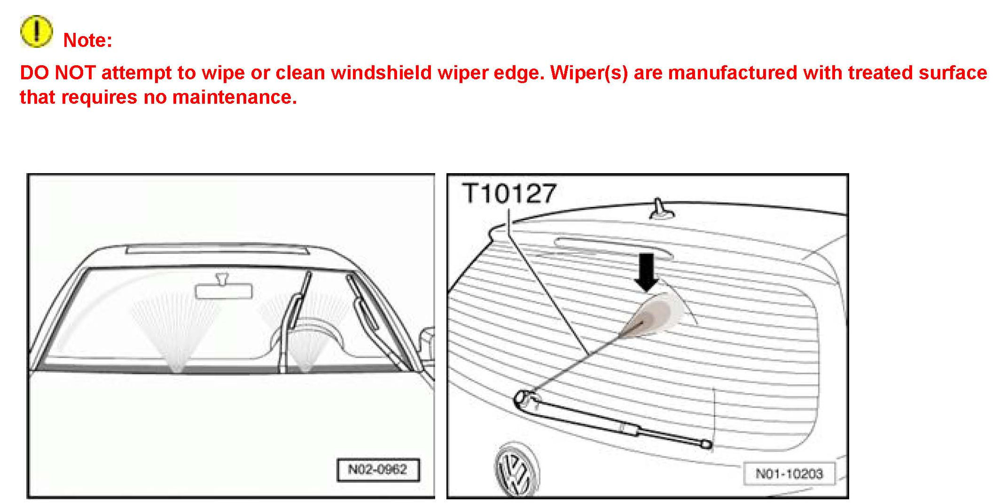
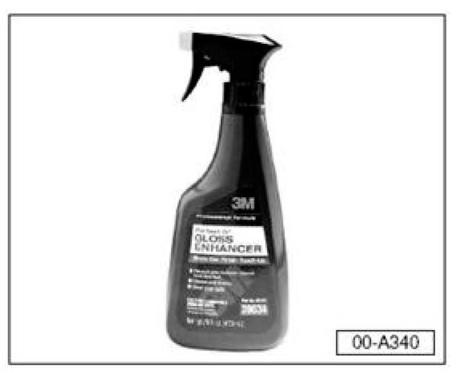
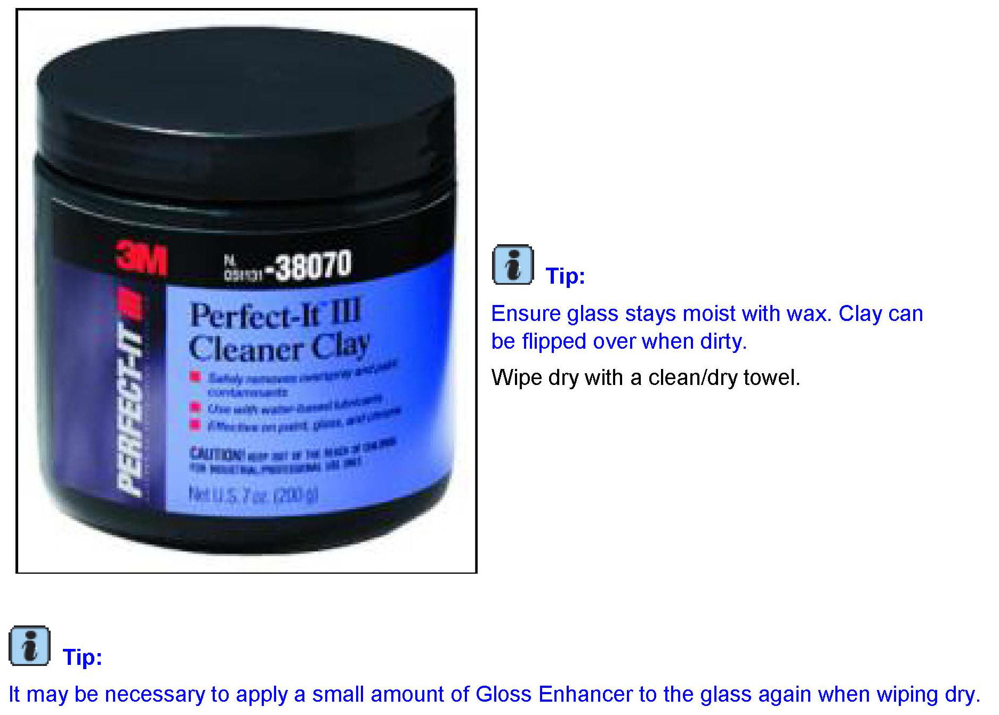
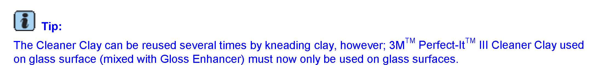
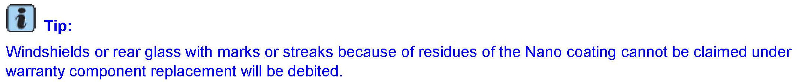

Wipers/Washers - Windshield Wipers Streak Or Smear
92 12 02April 5, 2012
2026253 Supersedes T.B. V921102 dated April 14, 2011 to include additional model and model year applicability, which also allows archiving of T.B. V921005 dated September 29, 2010 to avoid field confusion between the two publications.
Condition
Customer States Windshield Wipers Streak or Smear
To avoid unnecessary replacement of wiper blades, a few potential causes such as, the condition / cleanliness of the windshield and wiper blades, should be checked first.
Customer may complain that wipers are ineffective. Complaints may include that the wipers:
^ Streak or smear.
^ Do not clear across entire length of blade.
^ Chatter or skip as wiper travels across windshield glass.
Technical Background
If addressed, the wiper performance is significantly improved, as is the longevity of the wiper blades.
The following causes are possible:
^ The car wash and care products leave wax residues as well as remnants of high gloss drying aid on all glass surfaces.
^ Use of Nano coating on the windshield and rear glass.
- The rubber sections of the blade are worn.
Production Solution
No production change required.
Service
BEFORE REPLACING THE WIPER BLADES:
Check Wiper and Washer Operation

^ Verify operation of windshield and rear window washer(s).
^ If the washer(s) need to be adjusted, see Repair Manual Group 92 Windshield Wiper/Washer System in ElsaWeb.
^ Verify when in operation and after correct adjustment of washer(s) that wipers do not streak and properly clear the windshield.
^ If there is a concern, and before wipers are replaced, proceed with the following steps:
^ Confirm that there is no foreign matter that can be cleaned/removed from glass.
^ Clean glass using 3M Gloss enhancer and cleaner clay. See the steps outlined below.
Exterior Glass Cleaning
Residue on windshield, i.e., industrial fallout (rough surface, snake skin appearance, streaking) must be removed prior to replacing wiper blades.
The procedure for cleaning the windshield glass (removing industrial fallout) is as follows:

With vehicle exterior (including all glass surfaces) washed and dried, perform the following:
^ Apply 3M(TM) Perfect-It(TM) Gloss Enhancer Part No. 39034 to windshield.

Using 1/3 of a bar 3M(TM) Perfect-It(TM) III Cleaner Clay Part No. 38070:
^ Flatten clay into a small palm size pancake.
^ With clay flat between windshield and your hand, rub windshield (with light friction) using a vertical motion (up/down) across windshield.
Inspect glass surface using the palm of your hand (feel for rough surface).
If rough surface is found:
^ Repeat process until clean.

Tip:
Additional Considerations
Nano coating
^ Nano coating prevents an equal covering of the window with water and leads therefore to rubbing.
^ The Nano coating cannot be fully removed any more. The residues of the Nano coating can lead to marks on the windows. These residues of the Nano coating can impair the view.

Tip:
Wiper blades worn
^ When working on wipers or rubber sections observe the repair manual.
^ On vehicles with conventional wipers (New Beetle) check the angle of the wipers to the windscreen according to the repair manual and adjust if necessary.
^ Do not adjust Aero wiper blades.
^ Rubber sections of the blade should be replaced twice a year.
Warranty
Information only.
Required Parts and Tools
No Special Parts required.
No Special Tools required.
Additional Information
All part and service references provided in this Technical Bulletin are subject to change and/or removal.
Always check with your Parts Dept. and Repair Manuals for the latest information.